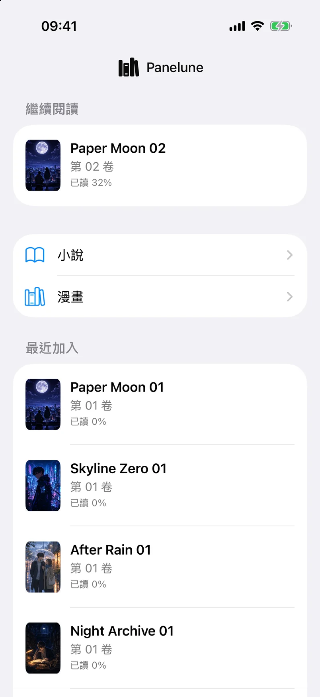
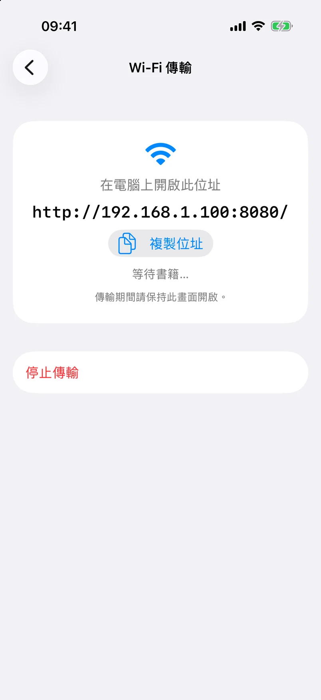

你的個人書庫
將漫畫與小說收納在一起，依系列（Series）與冊數（Volumes）整理。
一款重視隱私、以本機儲存為核心的漫畫與 EPUB 小說閱讀器。整理你的藏書，享受舒適閱讀，讓書籍留在自己的裝置上。
Panelune 1.2.0 新增 iPhone 支援，為 iPhone 和 iPad 帶來更完善的閱讀體驗。
真實 Panelune 畫面，使用原創示範書籍。iPad 截圖為英文介面。




將漫畫與小說收納在一起，依系列（Series）與冊數（Volumes）整理。
調整字型、瀏覽目錄、恢復閱讀進度，沉浸在小說之中。
自由選擇互動式翻頁或連續垂直捲動。
將選定書籍放入獨立的私人書庫，透過裝置認證保護存取。
透過「檔案」連結資料夾，或經由區域網路 Wi-Fi 從電腦傳輸書籍。
匯入後即可離線閱讀，無需帳號，也無需開發者託管的雲端書庫。
1.2.0 帶來更完善的 EPUB 顯示、排版與字型設定，更流暢的漫畫互動式翻頁，以及 iPhone 和 iPad 上更可靠的閱讀進度恢復。
匯入自己的書籍，讓本機書庫更容易整理與閱讀。
書籍在電腦上時，可透過 Wi-Fi 傳輸存入 Panelune；若已放在 iPad 的「檔案」中，也可以連結資料夾，直接從原位置讀取。
「系列」將相關書籍歸在一起，「單卷」則是其中的一本書。整理名稱與分組後，就能更方便找到下一本想讀的書。
App 支援 English、简体中文、繁體中文、日本語和 한국어。
English · 简体中文 · 繁體中文 · 日本語 · 한국어
免費版最多建立 3 個系列，現有系列可繼續新增冊數。Panelune Pro 解除系列數量限制。
一次性購買，無需訂閱。
實際價格以 App 內所在地區顯示為準。